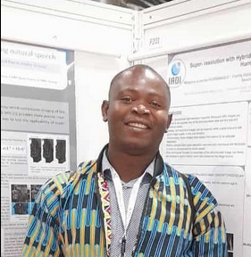

Welcome to my personal page. I am a Postdoctoral fellow at IADI laboratory (CHRU Nancy and Université de Lorraine), in France. I work on bSSFP MR image, focusing on the estimation of MR parametric maps using the newly introduced bSSFP sequence called PLANET. I was Ph.D. candidate at IADI laboratory (from October 2021 to May 2025), working on human placental MR images. I mainly contributed on super-resolution MR images reconstruction and the estimation of the IVIM (IntraVoxel Incoherent Motion) parameters.
Prior to the Ph.D. journey, I obtained a master degree in Mathematical Modeling at Sorbonne University (Paris, France) in 2019. I also hold a master degree in Mathematical Engineering at Aix-Marseille University (Marseille, France) in 2018. I obtained a bachelor in Mathematics at Cheikh Anta Diop University (Dakar, Senegal) in 2015.
I am interested in super-resolution reconstruction, motion correction, deep learning, machine learning, and medical imaging. I am also open to other domains. I welcome news opportunities.
Download my latest CV here.